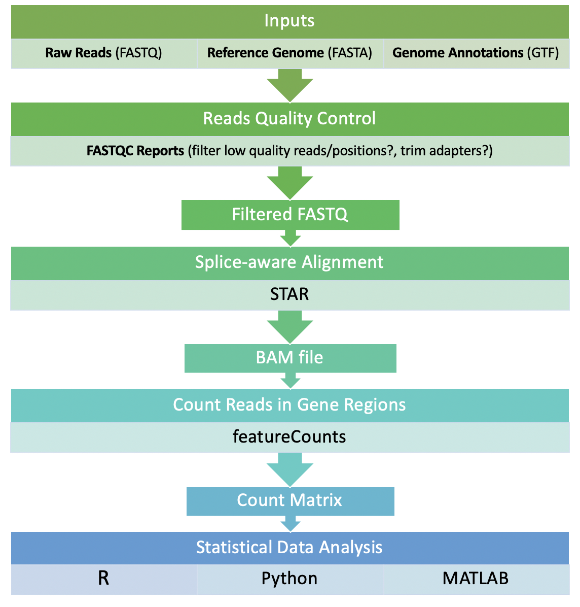

We will be performing preprocessing of RNA-seq data in a Linux environment on the RCC computing cluster. The figure below shows the general outline of RNA-seq processing pipeline. Note that the pipeline can differ depending on the sequencing platform, the format of the raw reads, and the overall goal of the project. In our case, we simply want to process Illumina-based RNA-seq reads into an expression matrix, which contains the read counts of each gene in each sample.

Get started by using ssh to log into midway.
ssh CNETID@midway2.rcc.uchicago.eduOnce logged in successfully, move to the scratch working directory:
cd /scratch/midway2/CNETIDIn general, you should be running all commands while in your scratch directory unless otherwise stated.
The raw data can be found in the class directory. You do not need to go into the class directory. We will be processing RNA-seq samples from 10 lymphoblastoid cell lines derived from unrelated Nigerian individuals (Pickrell et al. 2010.) You can view the FASTQ files by typing:
ls /project2/xinhe/alan/Lab2_RNAseq_Processing/unmapped_reads/NA18504_argonne.fastq.gz NA18519_argonne.fastq.gz NA18856_argonne.fastq.gz NA19099_argonne.fastq.gz NA19116_argonne.fastq.gz
NA18510_argonne.fastq.gz NA18852_argonne.fastq.gz NA19093_argonne.fastq.gz NA19102_argonne.fastq.gz NA19140_argonne.fastq.gzThe raw reads are in FASTQ format with 46 bp single-end reads. The FASTQ files are compressed by gzip to save disk storage, thus the files have a .gz extension. It’s not important to know how this works but its important to know how to read the contents of a zipped folder without unzipping it. In Linux, zcat is used to read text files that are zipped, similar to how cat is used to read unzipped text files. We can view a few entries in a FASTQ file in the following way:
zcat /project2/xinhe/alan/Lab2_RNAseq_Processing/unmapped_reads/NA18856_argonne.fastq.gz | head -n 4 # print the first 4 lines of the fileThe output should look like this:
@HWI-EAS146:1:5:17:1659#0/1 # READ NAME
CCCCCCCCCCCCCCCCCCCCCCCCCCCCCCCCCCCCCCCCCCACCC # SEQUENCE
+ # DESCRIPTION (optional)
BBB@1@>B?AABBBBBBBBABAAB>=A=BBBA9@7@>/@3A<)<5@ # BASE QUALITY SCORESWe would like to assess the quality of the reads before moving to alignment. We will use a popular tool called FASTQC, which compiles a detailed report about the FASTQ files. Note that FASTQC (and most softwares) takes zipped directly as input, so theres no need to unzip them beforehand. FASTQC will genetate one report per FASTQ file, and requires manual inspection of the report. We have 10 fastq files, therefore inspecting each manually is managable. Projects with hundreds of FASTQC reports use tools such as MultiQC to aggregate the reports. We will simply inspect them manually.
To run FASTQC, start by copying the sbatch script for FASTQC into your scratch directory:
cp /project2/xinhe/alan/Lab2_RNAseq_Processing/fastqc.sbatch .To view the contents of the script, type:
cat fastqc.sbatch#!/bin/bash
#SBATCH --job-name=fastqc
#SBATCH --output=fastqc_log
#SBATCH --error=fastqc_errors
#SBATCH --time=12:00:00
#SBATCH --nodes=1
#SBATCH --ntasks=1
#SBATCH --mem-per-cpu=20000
#SBATCH --account=pi-xinhe
#SBATCH --partition=xinhe
module load fastqc
FASTQ_FILES=$(ls /project2/xinhe/alan/Lab2_RNAseq_Processing/unmapped_reads/*)
OUT_DIR='fastqc_results'
mkdir $OUT_DIR
fastqc $FASTQ_FILES \
--out $OUT_DIRLines that begin with ‘#’ are for the RCC system, and lines without are for running our FASTQC commands. You can read more about submitting jobs to the RCC here.
Type the following command to submit the FASTQC job:
sbatch fastqc.sbatchTo check the status of the job, type:
qstat -u CNETIDIf the jod is running smoothly, the Use status will be R:
Req'd Req'd Elap
Job id Username Queue Name SessID NDS TSK Memory Time Use S Time
-------------------- -------- -------- -------------------- ------ ----- ----- ------ ----- - -----
56523402 CNETID broadwl fastqc -- 1 1 -- 12:00 R 00:00If for any reason the job fails, you can check fastq_errors file (in the same directory) for error messages.
The script above will generate a directory called fastqc_results in your scratch directory. In it, there are two files per FASTQ: SAMPLE_NAME_fastqc.html and SAMPLE_NAME_fastqc.zip. The HTML file contains all the test metrics and the .zip file contains the content needed to recreate the HTML file.
To view the HTML reports, we will need to download them to our computes. Open a new terminal tab, and use the secure copy function scp to download them:
CNETID='X'
scp -r $CNETID@midway2.rcc.uchicago.edu:/scratch/midway2/$CNETID/fastqc_results/ ~/Replace ‘X’ with your CNET ID. The command above will download the folder to your home directory on YOUR laptop (not the server). Enter password and authenticate to complete download. Double click the .html file to open it in your browser. The left panel indicates all the tests that FASTQC ran. A green icon indicates a pass, orange is a warning, and red is a failure.
The most important catagories to look out for are “per sequence quality scores” and “per base sequence quality”. If these are poor metrics, we would have to trim low quality positions, and filter low quality reads. At the minimum, all samples should at least pass the “per sequence quality scores” (a warning is fine) before moving onto alignment, i.e. no reads with failing quality scores. Check all 10 reports to see if this is the case and then move on to the next section. You can learn more about all the other tests here.
We will now align the reads. We will be using the STAR aligner to align our reads to the human reference genome hg38. STAR is a splice-junction-aware aligner, meaning it can map spliced mRNA (which doesn’t contain introns) across a genomic region with introns.
Once again, to run STAR, start by copying the sbatch script for STAR into your scratch directory:
cp /project2/xinhe/alan/Lab2_RNAseq_Processing/align_reads.sbatch .View contents:
cat align_reads.sbatch#!/bin/bash
#SBATCH --job-name=STAR_align
#SBATCH --output=STAR_log
#SBATCH --error=STAR_errors
#SBATCH --time=12:00:00
#SBATCH --nodes=1
#SBATCH --ntasks=10
#SBATCH --mem-per-cpu=4000
#SBATCH --account=pi-xinhe
#SBATCH --partition=bigmem2
module load STAR
STAR_REF_INDEX='/project2/xinhe/alan/Lab2_RNAseq_Processing/refGenome/STAR/'
FASTQ_FILES=$(ls /project2/xinhe/alan/Lab2_RNAseq_Processing/unmapped_reads/* | paste -sd,)
READ_GROUP_IDs=$(ls /project2/xinhe/alan/Lab2_RNAseq_Processing/unmapped_reads | cut -d'_' -f1 | awk '{print " ID:"$1" "}' | paste -sd,)
OUT_DIR='BAM_files'
mkdir $OUT_DIR
STAR --runThreadN 10 \
--genomeDir $STAR_REF_INDEX \
--readFilesIn $FASTQ_FILES \
--readFilesCommand zcat \
--outFilterMultimapNmax 1 \
--outSAMtype BAM SortedByCoordinate \
--outSAMattrRGline $READ_GROUP_IDs \
--outFileNamePrefix $OUT_DIR/Submit the sbatch script:
sbatch align_reads.sbatchThe output is stored at BAM_files/Aligned.sortedByCoord.out.bam. The output is a Sequence Alignment Map SAM file. It stores mapping information for each read, such as the mapping position, and the reference sequence onto which the read maps on. To further compress the SAM file and save, we convert it to a BAM file, which is a Binary SAM file. We also sorted the reads in the BAM file by their genomic coordinates (i.e. reads mapped in chromosome 1 are on top, and so forth), which is useful for downstream analyses.
We can view the contents of the BAM file using samtools. samtools is very handy for manipulating BAM files. You can find a list of frequently used samtools commands here. We will use view to read simply view the contents of the BAM file:
module load samtools
samtools view BAM_files/Aligned.sortedByCoord.out.bam | head -n 1HWI-EAS146:7:40:26:1960 0 chr10 21457 255 9S37M * 0 0 AAAAAAAGAGAAAAAAAAAAAAAAAAAAAAAAAAAAAAAACAAGAA %%%%%%%%%%%%%%%%%%%%%%%%%%%%%%%%%%%%%%%%%%%%%% NH:i:1 HI:i:1 AS:i:36 nM:i:0 RG:Z:NA19102The important columns are the third and fourth columns, which represent the chromosome name and the starting position of where the read maps to. The fifth column is also important because it shows the read mapping quality (here it is the maximum, 255, which indicates a perfect alignment.) It is common at this stage to filter low quality alignments by setting a threshold on the fifth column, but I will skip this step here for simplificity. There are tags as well that can show a variety of metadata about the read. For instance, the RG tag shows that this read is from individual NA19102.
Now that the reads are aligned to genomic coordinates, we want to know which genes these reads mapped to. We will use featureCounts to count the number of reads that were mapped to each gene using an annotation file. The annotation file provides a description (length, gene name, etc.) to genomic regions, and featureCounts creates a tally of reads that were mapped in each genomic region.
To run featureCounts, copy the sbatch script for featureCounts into your scratch directory:
cp /project2/xinhe/alan/Lab2_RNAseq_Processing/featurecounts.sbatch .cat featurecounts.sbatch#!/bin/bash
#SBATCH --job-name=featureCounts
#SBATCH --output=featureCounts_log
#SBATCH --error=featureCounts_error
#SBATCH --time=12:00:00
#SBATCH --nodes=1
#SBATCH --ntasks=1
#SBATCH --account=pi-xinhe
#SBATCH --partition=broadwl
ANNOTATIONS='/project2/xinhe/alan/Lab2_RNAseq_Processing/refGenome/gencode.v27.annotation.gtf'
BAMFILE='BAM_files/Aligned.sortedByCoord.out.bam'
FEATURECOUNTS='/project2/xinhe/alan/Lab2_RNAseq_Processing/software/featureCounts'
OUT_DIR='counts/'
mkdir $OUT_DIR
$FEATURECOUNTS -a $ANNOTATIONS \
-o $OUT_DIR/counts.txt \
-t gene \
--byReadGroup \
$BAMFILE
cut -f1,7-18 $OUT_DIR/counts.txt | sed 's/BAM_files\/Aligned.sortedByCoord.out.bam://g' | grep -v "#" > $OUT_DIR/count_matrix.txtSubmit:
sbatch featurecounts.sbatchThe script above does two things:
It calls the program featureCounts and returns counts.txt, which contains the read counts of each gene in each sample, as well as other metadata. We aren’t too interested in the metadata at this stage, which brings us to the next postprocessing step.
I used cut on the previou output counts.txt to keeps column 1 (the gene IDs) and columns 7-18 which contain the count information for all samples. I also used sed to remove un-needed text from the headers. The final output is a clean gene count matrix called count_matrix.txt.
Check your output by viewing the head of the count matrix:
head -n 5 counts/count_matrix.txtIt should look like this:
Geneid NA18504 NA18510 NA18519 NA18852 NA18856 NA19093 NA19099 NA19102 NA19116 NA19140
ENSG00000223972.5 0 0 0 0 0 0 0 0 0 0
ENSG00000227232.5 6 23 2 14 1 8 6 1 22 28
ENSG00000278267.1 0 0 0 0 0 0 0 0 0 0
ENSG00000243485.5 0 0 0 0 0 0 0 0 0 0We generated 10 quality control (QC) reports in the first section of this tutorial. Have a look at the “Per base sequence quality” in each report. This section reports the sequencing quality (y-axis) as a function of position in each read (x-axis).
We performed alignment in the second section but we did not discuss the quality of the alignment. STAR returns a log file called Log.final.out which has important statistics that we must consider. View the contents of this file and report the following:
Download the final gene count matrix count_matrix.txt to your computer by typing the following scp command on your laptop terminal:
CNETID='X'
scp $CNETID@midway2.rcc.uchicago.edu:/scratch/midway2/$CNETID/counts/count_matrix.txt ~/Open RStudio, and load the count matrix into R using the code below:
counts <- read.delim('~/count_matrix.txt',sep='\t', row.names=1, header = T)View the head of the matrix using:
head(counts)The row names of the matrix counts represent gene IDs, while the column names represent samples.
Consider the gene GAPDH, which is a well-known housekeeping gene with functions in glycolysis. GAPDH is commonly used a control in RNA-seq studies because its expression should more-or-less be constant across samples. If it’s not constant, then the reason is likely technical rather than biological. We can use the expression of GAPDH to test for technical variability in gene expression. One common technical variability is the library size, which is the total number of reads in each sample.
You can approximate the library size of each sample by using the colSums() function:
lib_size <- colSums(counts)